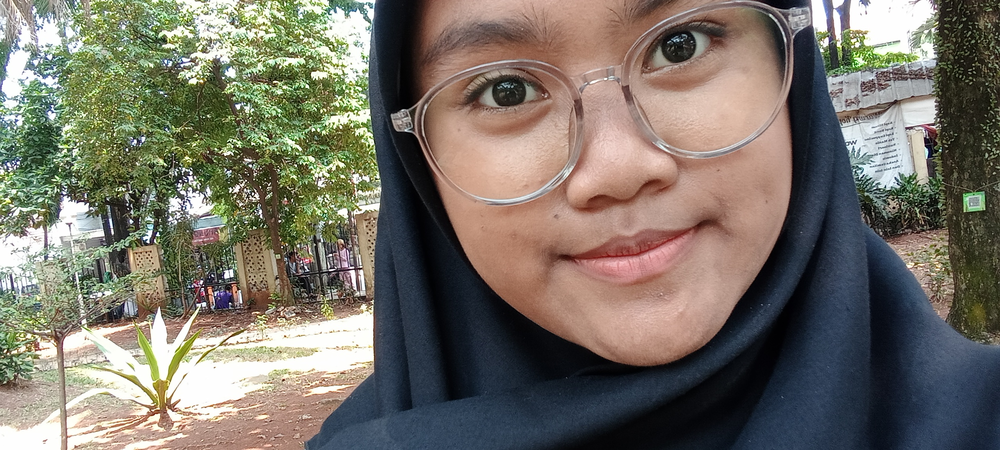

Daftar Riwayat Hidup

Profil
Halo! Saya Nurliawati, siswi kelas X PPLG. Saya sedang mempelajari
dasar-dasar pemrograman, khususnya dalam pembuatan website.
Saya senang mencoba hal-hal baru dan terus mengembangkan kemampuan
saya di bidang teknologi.
Riwayat Pendidikan
- TK ANNISA | 2016-2017
- SDN KALIBARU 2 | 2017-2023
- MTs IRSYADUL ATHFAL | 2023-2026
- SMKN 1 DEPOK | 2026-sekarang
Riwayat Organisasi
- OSIS 2024-2026
- MPK 2026-sekarang
Skill
- Memasak (pemula)
- Bernyanyi (Sopran, tergantung kenyamanan diri pada genre musik(paling suka genre pop balada), tingkat pemula)
Hobi
- Memasak
- Mendegarkan Musik
- Menonton Musik Vidio(orchestra)
Motto Hidup
"Terus melangkah dan percaya bahwa setiap hal memiliki waktu terbaiknya.” ✨